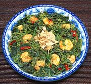

|
Shrimp with Chayote GreensMalay / California | ||||
| Serves: Effort: Sched: DoAhead: |
2 w/rice ** 50 min Prep |
Chayote leaves are delicious, though a little coarse, and very popular throughout Southeast Asia. This recipe will serve as a main dish for two or a side dish for 4, suitable for Asian or Western menus. | |||
| I started from a recipe by a lady originally from Penang Island, Malaysia. I made changes, and while they are all consistent with Southeast Asian practices and similar recipes, I call it "Malay / California". | |||||
|
6 12 3 2 ------ 1-1/2 2/3 1 1/2 1/3 ------ 2 ------ |
oz oz cl --- T c T t t --- T --- |
Shrimp Chayote Greens (1) Garlic Chili, red (2) -- Sauce Rice Wine (3) Stock, Shrimp or Chicken Fish Sauce (4) Salt Sugar (opt) (5) --------- Oil -- Garnish Shallot Crisps |
Prep - (30 min)
|